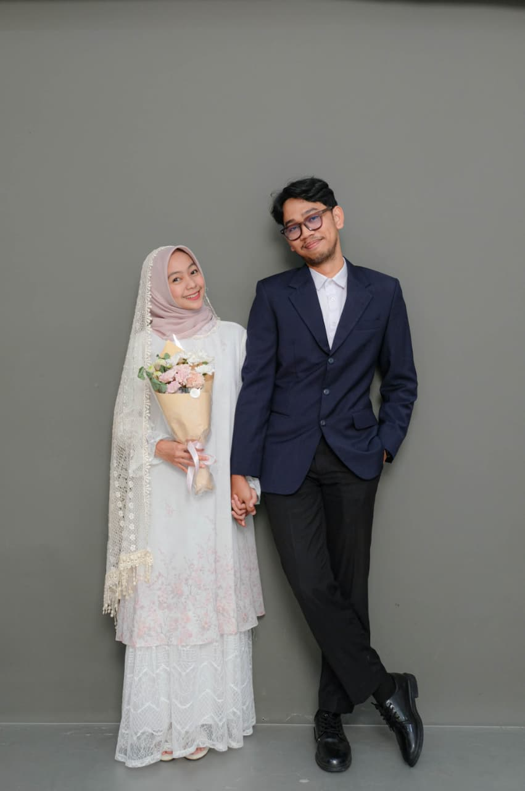
all because two people
fell in love...
The Wedding of
Anjeli & Rafi
and so it begins...
"Dan di antara tanda-tanda (kebesaran)-Nya ialah Dia menciptakan pasangan-pasangan untukmu dari jenismu sendiri, agar kamu cenderung dan merasa tenteram kepadanya, dan Dia menjadikan di antaramu rasa kasih dan sayang..."
Q.S. Ar-Rum 21
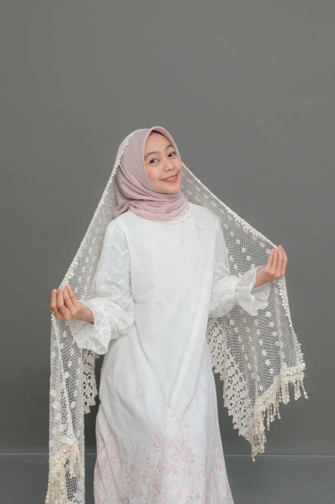
the bride
Anjeli Mutiara Putri,
S.Tr.Keb.
Putri dari
Bapak Rinenggo Wahyu Jatmiko, S.Hut.
& Ibu Ratna Mutumanikam
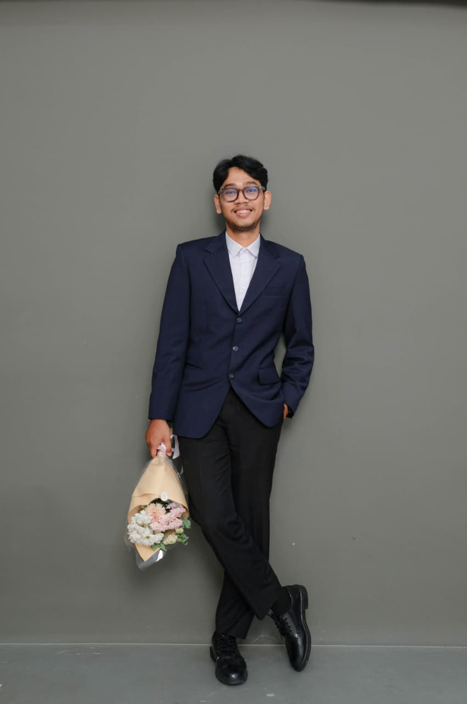
the groom
Rafi Rahman Dika,
A.Md.Kep.
Putra dari
Bapak Sudarman
& Ibu Hariyanti, S.Pd.
Kisah Cinta
Awal Bertemu
Sebelumnya kami adalah teman satu SMA dan kelas kami bersebelahan namun kami tidak pernah saling berkomunikasi hanya saling tahu nama satu sama lain, katanya Rafi sejak SMA sudah ada rasa ketertarikan dengan Anjeli tapi tidak berani mendekati…
Seiring berjalannya waktu hingga kami selesai kuliah di Universitas yang sama yaitu Poltekkes Palangka Raya dengan jurusan Kebidanan dan Keperawatan kami masih tidak pernah saling berkomunikasi dan tiba satu waktu kami dipertemukan disalah satu Caffe karena teman-teman kami saling mengenal, di saat itulah kami berdua pun mulai saling berkomunikasi.
Merajut Kasih
2023Waktu yang berlalu setelah lebih sering bertemu perlahan menumbuhkan rasa nyaman diantara kami… Hingga disuatu waktu Rafi mengungkapkan perasaannya dengan Anjeli dan kami memutuskan untuk menjalani hubungan ini dengan penuh cinta, menjalaninya bersama dalam suka maupun duka, banyak sekali rintangan cobaan yang telah kami hadapi namun kami tetap saling menguatkan dan memberikan cinta kasih yang tulus ini satu sama lain.
Mengikat Janji
2026Berkat doa dan restu orang tua dan keluarga kami, serta niat kami yang tulus untuk saling mencintai, Allah memudahkan jalan kami hingga sampai dititik kami bisa bersanding dipelaminan… Di hari raya idul fitri kedua tidak disangka hari itu menjadi hari dua keluarga saling berdiskusi untuk menetapkan waktu pernikahan kami dengan semua keluarga besar yang berkumpul.
S A V E T H E D A T E
01 Juni 26
Hari
Jam
Menit
Detik
Akad Nikah
Senin, 01 Juni 2026, 08:00 WIB
&
Resepsi
Senin, 01 Juni 2026, 11:00 - 14:00 WIB
Dandang Tingang Hotel
Jl. Yos Sudarso No.13, Kec. Pahandut, Kota Palangka Raya, Kalimantan Tengah 73111
BUKA DI GOOGLE MAPSGaleri
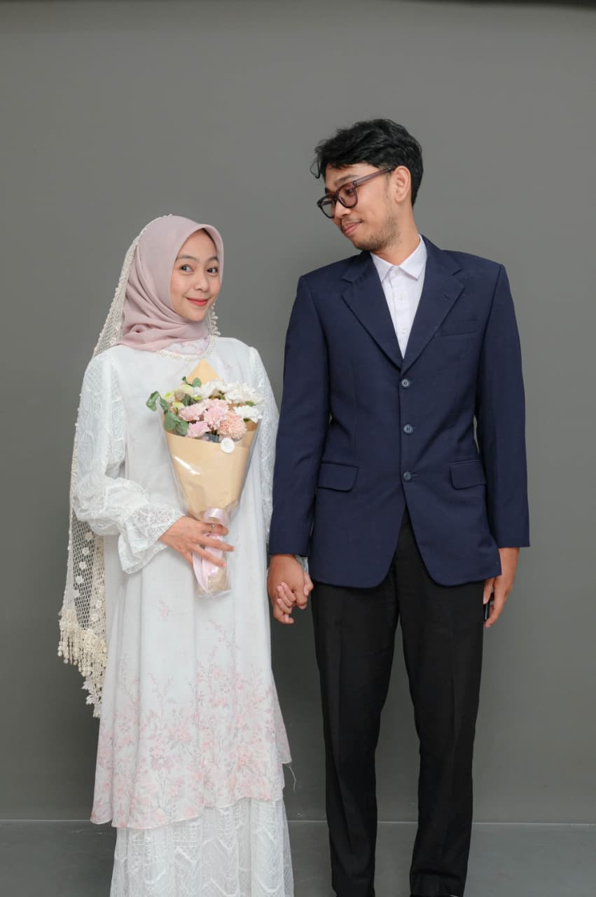
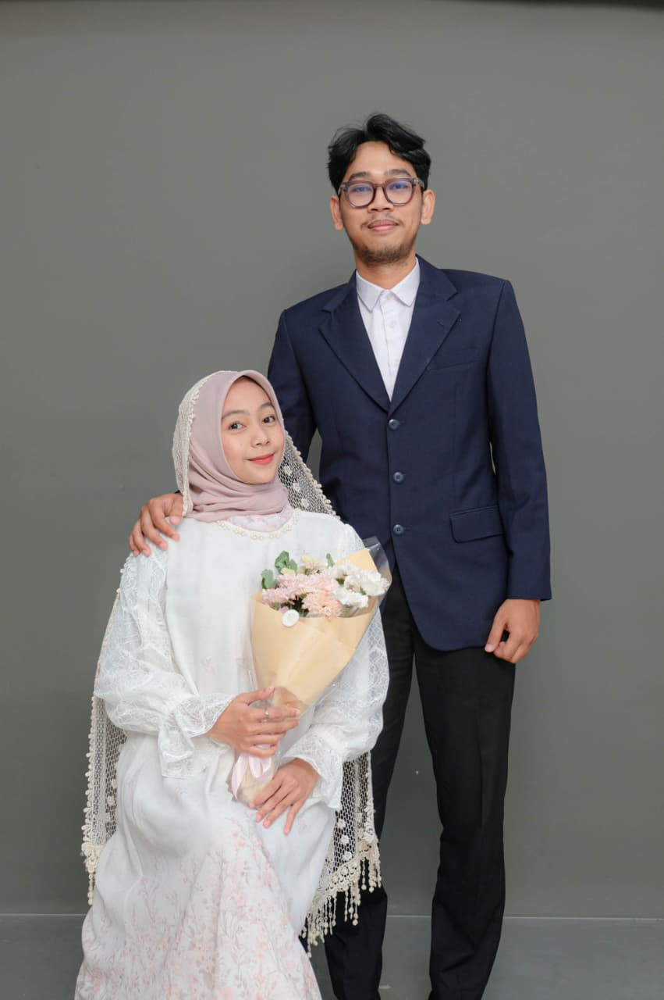
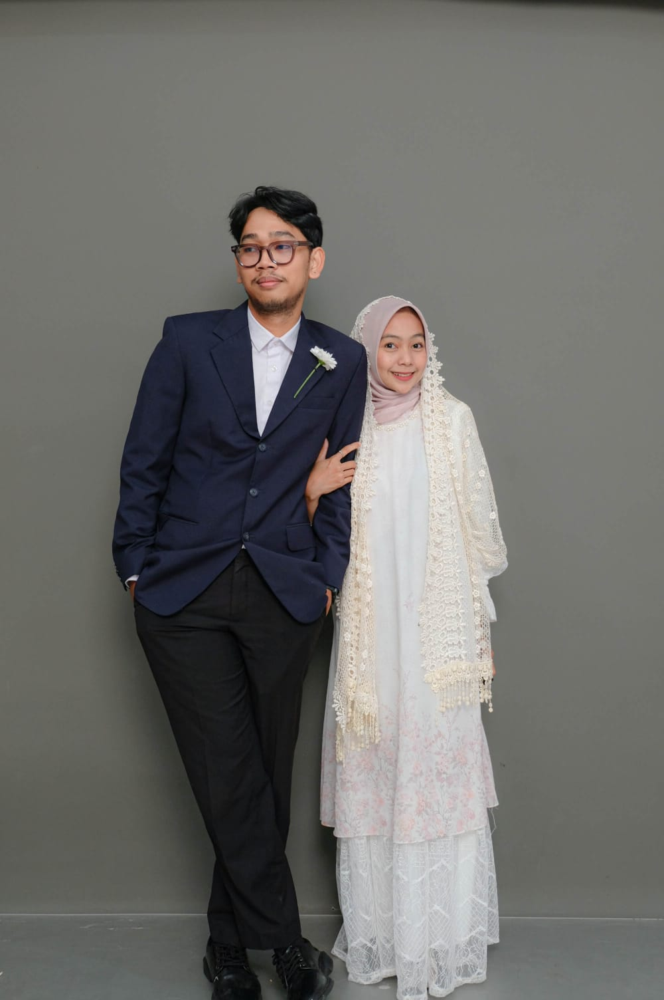
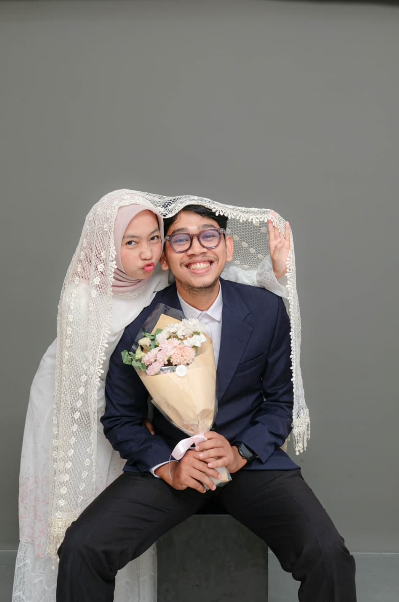
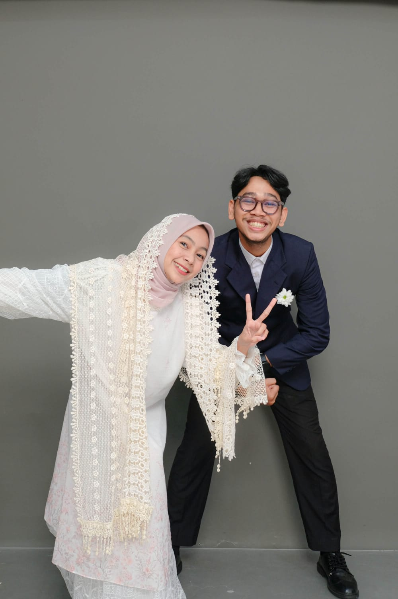
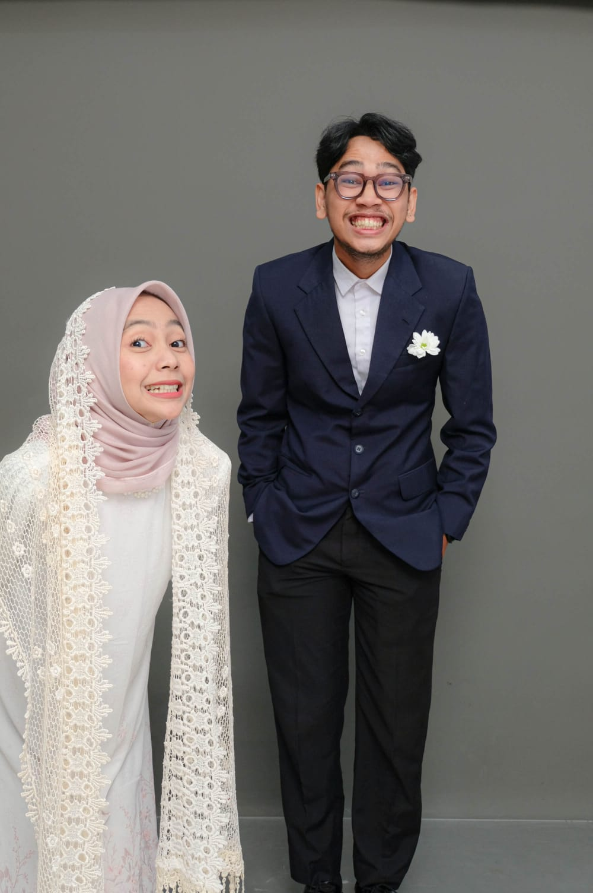
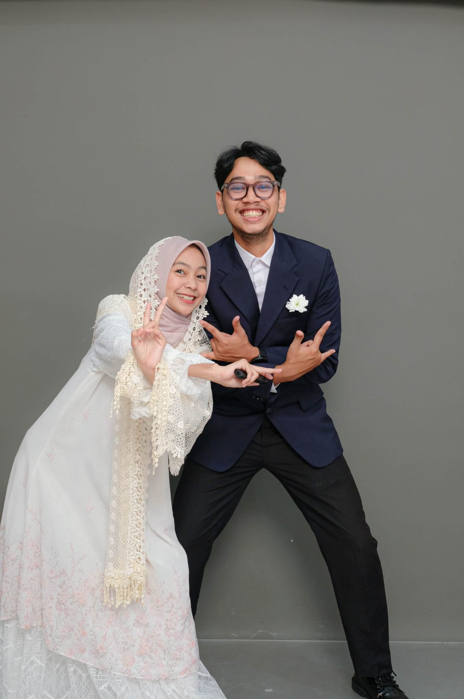
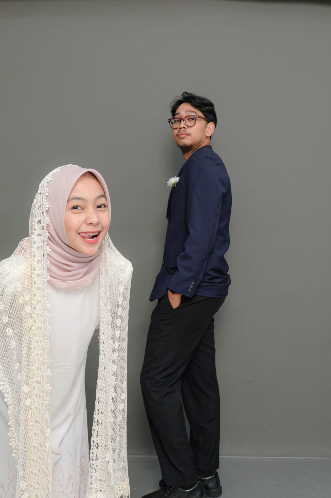
RSVP
Merupakan suatu kehormatan dan kebahagiaan bagi kami sekeluarga apabila Bapak/Ibu/Saudara/i berkenan hadir.
Wedding Gift
Doa restu Anda merupakan karunia yang sangat berarti. Jika Anda ingin memberikan tanda kasih, silakan gunakan fitur di bawah ini.
BANK BSI
7294260425
ANJELI MUTIARA PUTRI
BANK BCA
8600959833
RAFI RAHMAN DIKA
Menjadi sebuah kebahagiaan bagi kami apabila Bapak/Ibu/Saudara/i berkenan hadir.
Terima kasih atas segala doa dan restu.